Таблицы в Word
В программе Ворд можно не только напечатать текст, но и сделать таблицу. Вы можете выбрать для нее нужное количество строк и столбцов, редактировать как-угодно: расширять, сужать, объединять ячейки, удалять, печатать внутри текст и многое другое.
Пример:
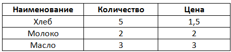Как сделать таблицу
Способ 1: вставка
Сначала необходимо поставить мигающий курсор (мигающую палочку) в нужное место. Для его смещения вниз нажмите кнопку Enter на клавиатуре. А чтобы поднять мигающий курсор выше — Backspace.
Или можно просто щелкнуть в нужном месте два раза левой кнопкой мыши.
В программе Word 2007-2021 для создания таблицы нажмите на надпись «Вставка» в левом верхнем углу программы. Появятся новые пункты редактирования, среди которых будет «Таблица».

Кликнув по ней, откроется список, в котором Ворд предложит несколько вариантов добавления. Нажмите на пункт «Вставить» в нижнем меню.
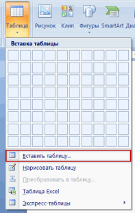Откроется небольшое окошко. В верхней части напечатайте необходимое количество столбцов и строк. Также обратите внимание на нижнюю часть окошка. Точка должна стоять на пункте «Постоянная», и в соседнем белом поле должно быть указано значение «Авто».
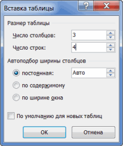Другие настройки ширины столбцов применяются крайне редко, в исключительных случаях, и рассматривать их в рамках данного урока мы не будем.
После нажатия на ОК таблица с указанным количеством столбцов и строк вставится в документ (на страницу).
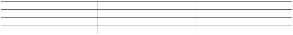Способ 2: быстрое создание
Быстрое добавление ничем не отличается от обычного. Но этот способ ограничен в возможностях: максимальное количество строк — 8, а столбцов — 10.
Переходим во вкладку «Вставка» в верхнем меню программы.
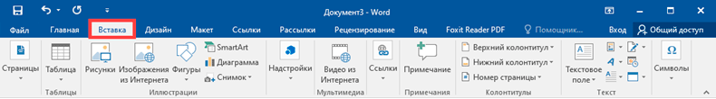Нажимаем на надпись «Таблица» и добавляем нужное количество столбцов и строк через верхнюю часть окошка.
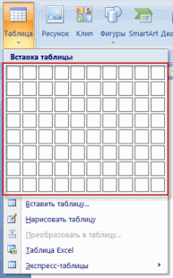Принцип работы прост — Вы проводите курсором (стрелкой) по квадратикам, а программа Word формирует объект исходя из выбранного количества строк и столбцов.
Способ 3: рисование
Этот способ хорош в том случае, если нужно составить сложную таблицу. Например, такую:
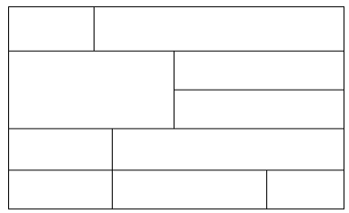Переходим во вкладку «Вставка».
Нажимаем на кнопку «Таблица» и выбираем «Нарисовать».
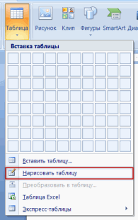Курсор (стрелка мышки) примет вид небольшого карандаша. Вот им мы и будем рисовать.
Для начала сделаем основу. Для этого наведите курсор (в нашем случае — карандаш) в нужное место на странице. Затем нажмите левую кнопку мышки и, не отпуская ее, «рисуйте» прямоугольник подходящего размера.
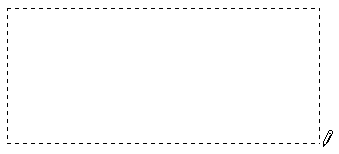Отпустите кнопку мышки — основа добавится.
Теперь осталось нарисовать детали — строки и столбцы. Это как раз тот редкий случай, когда объяснить данный процесс на словах крайне трудно. Принцип следующий: нажимаем левую кнопку мышки внутри прямоугольника и протягиваем линию. Программа в этом поможет — линия «дорисуется» самостоятельно. Главное, показать Ворду направление.
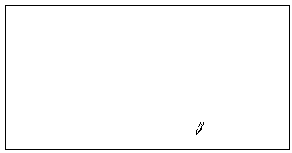Если Вы вдруг что-то сделаете неправильно, всегда можно вернуться на шаг или несколько шагов назад. Для этого нажмите на значок «Отменить» вверху программы.
Когда всё будет готово, нажмите два раза левой кнопкой мышки по пустому месту. Курсор снова станет палочкой, а не карандашом.
Способ 4: шаблоны
В программе Word есть готовые шаблоны — заготовки, которые можно добавить на страницу и отредактировать. Поменять цифры и значения, вставить или удалить строки и столбцы.
Делаются они так же, как и обычные — через вкладку «Вставка». Наводим курсор на пункт «Экспресс-таблицы» и выбираем подходящий шаблон.
Способ 5: Excel
Если в ячейки нужно не только ввести значения, но еще и «посчитать» (сложить, умножить, вычислить процент и т.д), то следует вставить лист Excel.
Для этого опять же перейти в закладку «Вставка», нажать на надпись «Таблица». Из списка выбрать пункт «Excel».
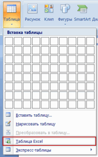Как удалить
Удалить таблицу, созданную в программе Word, можно разными способами. Сейчас мы научимся это делать самым, на мой взгляд, простым.
Сначала нужно ее выделить. Для этого наведите курсор на первую ячейку первой строки (только не внутрь ячейки, а чуть левее, за границу).
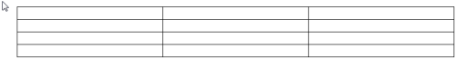Нажмите левую кнопку мышки и, не отпуская ее, тяните в самый конец. Вот тут важный момент — тянуть нужно до последней строки и чуть ниже. Выделиться объект должен особым образом, с маленьким «хвостиком» в конце.
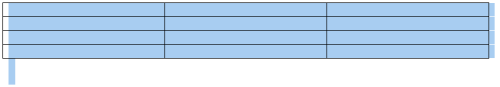А теперь нажмите Delete (Del) на клавиатуре.
Совет. Если у Вас все-таки не получится ее удалить, выделите снова, затем нажмите правой кнопкой мышки по выделенному (закрашенному). Откроется список, нажмите на пункт «Вырезать».